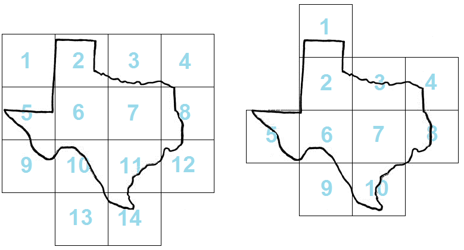

出版地图并不是一件容易的事。首先你需要通过一些适当的变换来在一个二维平面上显示出地球的“球”的形状，然后另一个问题出现了——最优质的地图太大了，以至于不能被印在一页纸上。为了解决这个问题，地图出版者经常将地图分成若干矩形部分，并在同一页的各个矩形砖上打印各个部分。在本题中，你将验证以上的“平铺”过程。
国际地图出版公司（ICPC）需要通过减少用于打印地图的砖数来最小化他们的打印成本。即使对于固定的砖块大小（由页面大小决定）与地图比例尺，你仍然可以通过调整矩形砖网格的位置来进行优化。
图1左侧是一种用14个矩形砖来覆盖一个地图区域的方法。右侧显示了如何在不改变矩形砖的大小或方向的情况下，只用10个砖来覆盖同一区域。

图1：两种平铺德州地图的方法
你的任务是帮助ICPC找到为了覆盖指定的区域，最少需要多少矩形砖。为简化问题，假定这个指定的区域是一个闭合的多边形，且不自交。
注意这些砖组成的矩形网格必须与X轴和Y轴平行，也就是，他们互相接触的部分只能是整条边，而且不能旋转。此外，虽然输入的所有坐标都是整数，但矩形砖可能位于非整数坐标上。
这个多边形可能碰到矩形网格的边缘线（比如样例2）。但是，为了避免浮点误差，你可以假设当这个多边形向外移动不超过10-6的距离时，答案不会变化。